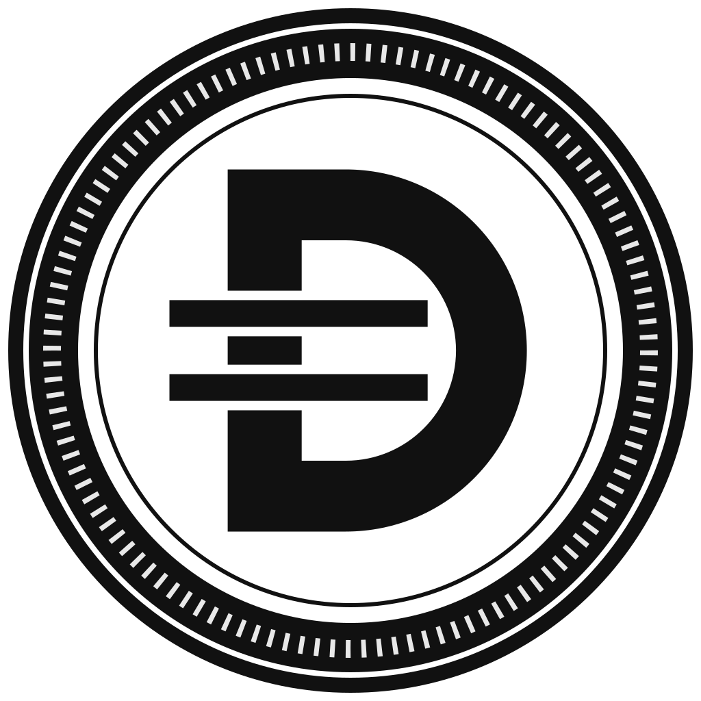

DWC — Cooperative Welfare on Avalanche
Team1 Hackathon @ Blockchain Beach 2026 · AI x Avalanche for real-world utility · B-Chainers Labs (DreamNet Soc. Coop.)
A co-op member writes "vorrei 30 € di buoni pasto". An AI assistant reads the welfare rules from the smart contracts, prepares the right operation, dry-runs it against the contract, explains any refusal in plain language — and the member signs with a wallet created from their e-mail, gas sponsored.
Open the live demo
Pitch slides (PDF)
Source code
The live demo runs on the presenter's machine during the event. If it is offline, everything below is permanent and verifiable on-chain.
Contracts on Avalanche Fuji (C-Chain, chain ID 43113)
Verifiable actions from the event
- Annual accrual computed by the on-chain regulation (500 base + 2,200 roles, one transaction) — view
- Blockchain Beach cap bought through the AI assistant, 20 DWC into escrow — view
- All member activity (mints, purchases, burns) — DWC token transfers
Why Avalanche is essential
- Automatic issuance: DWC are minted by the contract from role, membership, part-time, start date, barter hours, rankings and bonuses — no spreadsheet.
- Fair rules, guaranteed: same code for everyone, immutable regulation versions, anyone can verify.
- Closed loop: no secondary market, 6-month expiry after leaving enforced by code, DWC burned on delivery.
- Grounded AI: the assistant cannot promise what the contract would revert.
- Privacy: only addresses on-chain; names stay in the co-op's own systems.
Simone Lazzari · B-Chainers Labs · DreamNet Soc. Coop. · dream-net.it